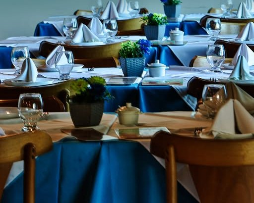
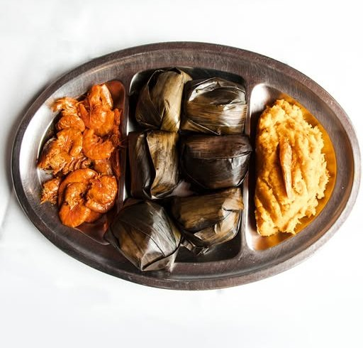

Armação · Salvador · Bahia
A Bahia servida à mesa há 52 anos.
Moqueca, abará com vatapá, casquinha de siri e camarão na moranga. Tradição em frutos do mar, de domingo a sábado, das 11h30 às 17h.
Pertinho do Centro de Convenções. Vai a um evento?


Nossa história
52anos de história, celebrados em novembro de 2026.
Foram mais de cinco décadas servindo a Bahia à mesa, recebendo famílias, amigos e visitantes de todos os cantos.Restaurante Yemanjá, no aniversário de 52 anos
Em Armação, o Yemanjá recebe a família no almoço, os amigos na comemoração e quem chega a Salvador para os eventos do Centro de Convenções. A cozinha é a da Bahia: dendê, leite de coco, folha de bananeira e o que vem do mar.
A casa resume assim: “A melhor culinária da Bahia em Armação.”
Da cozinha
O sabor do mar com a essência da Bahia.
Os pratos que a casa mais mostra. O cardápio completo, com o que tem hoje, fica aqui.

O salão
Toalha azul, guardanapo branco, luz do dia.
Mesa posta para família grande, para grupo de trabalho e para quem chega sozinho. Para aniversário ou comemoração, é só avisar na reserva.
Vai a um evento no Centro de Convenções?
Entre um congresso e outro, uma pausa com sabor de Bahia.
O Yemanjá fica pertinho do Centro de Convenções de Salvador. Quem vem para os eventos do mês encontra aqui uma pausa de verdade, no almoço.
Reservas e informações
Guarde sua mesa.
Mesa para dois, almoço de família, grupo do congresso ou aniversário. Preencha e a mensagem sai pronta para o WhatsApp do restaurante.
(71) 99698-5181Domingo a sábado, das 11h30 às 17h.
Armação · Salvador. Abrir no mapa